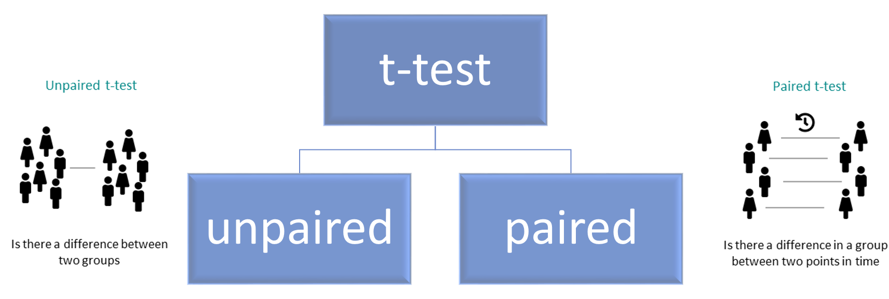
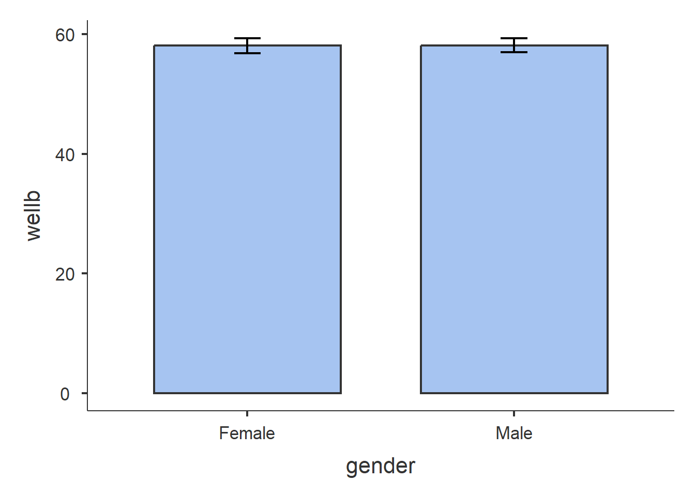
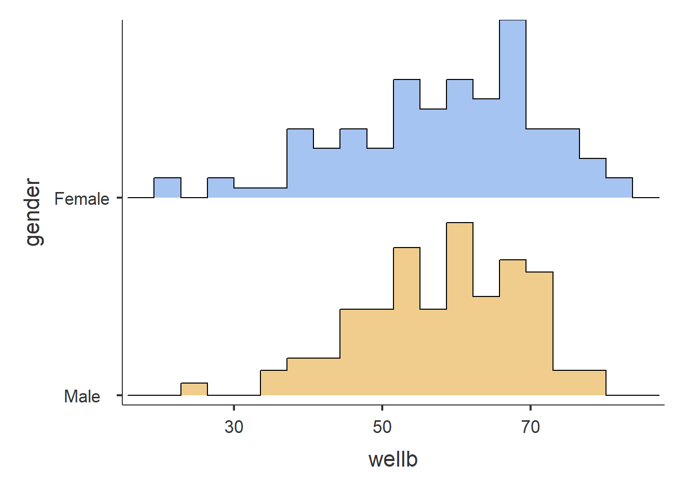
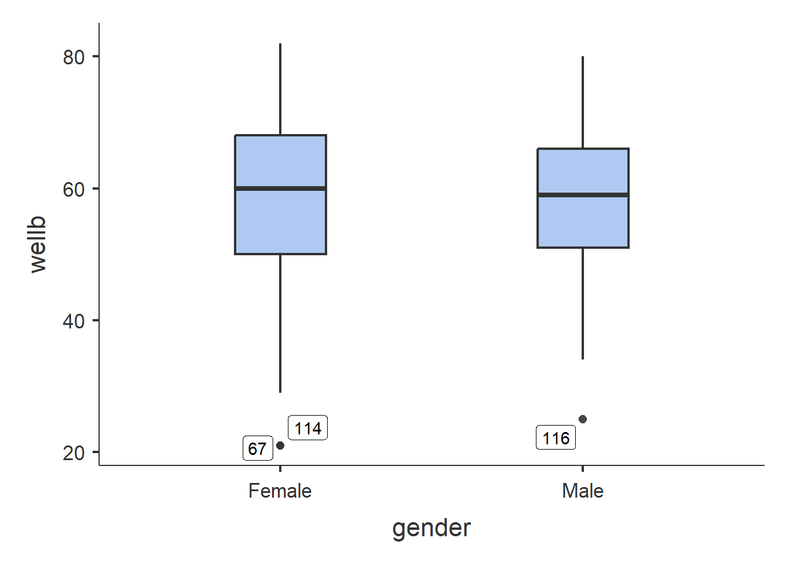
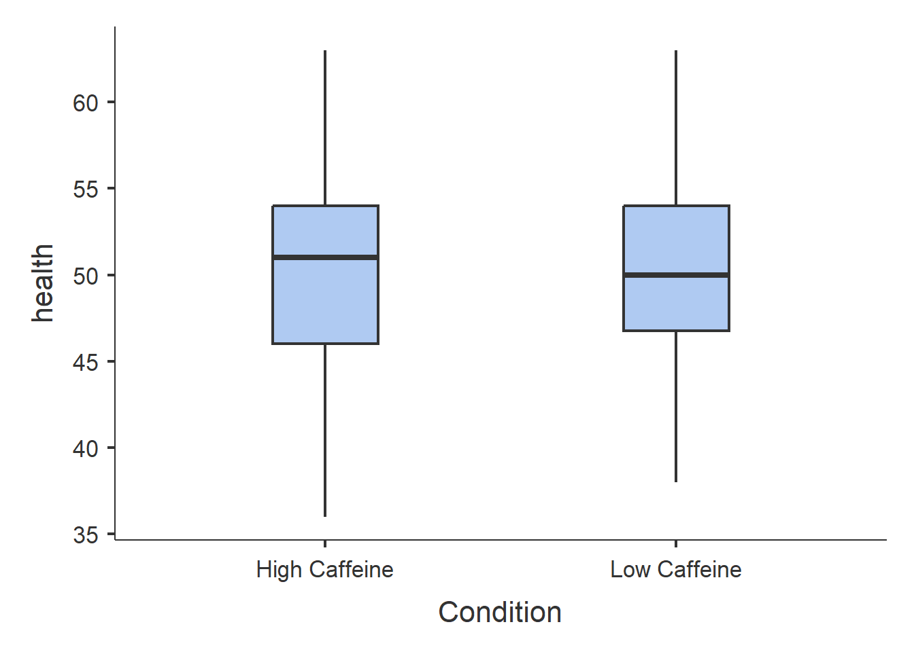
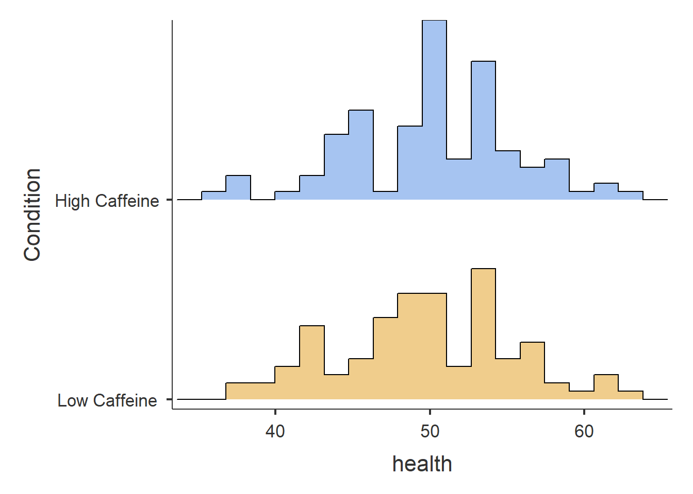
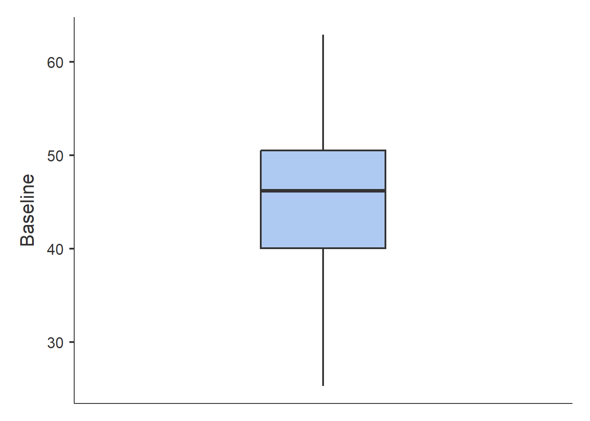
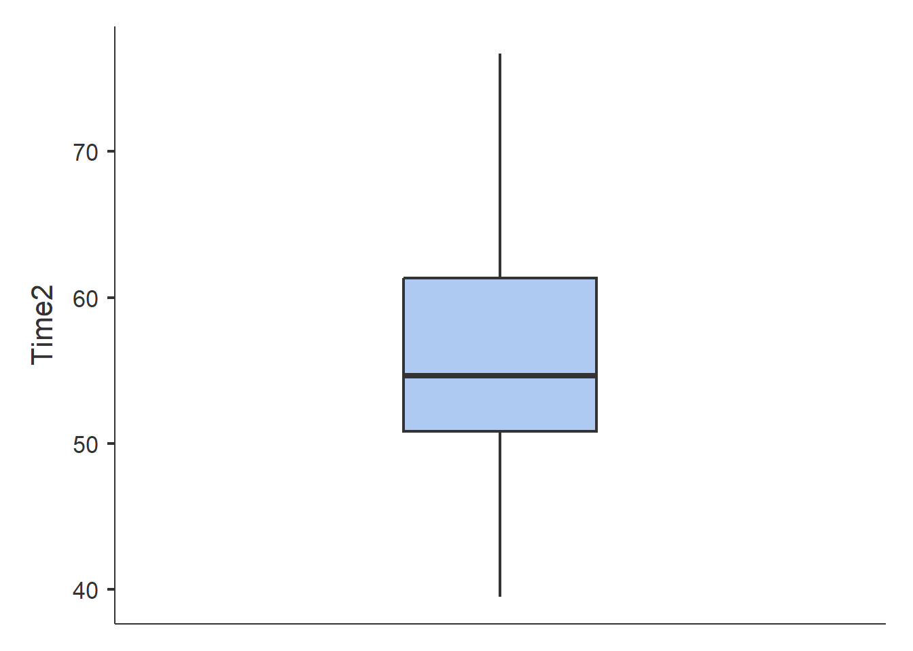
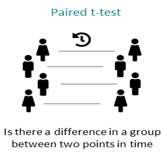

getwd()[1] "C:/Users/0131045S/Desktop/R/rintro/activities/week4"In this weeks workshop, we are going to learn how to perform descriptive statistics and conduct both independent and paired-samples t-tests (which you covered in today’s lecture).

Additionally, we will learn how to check parametric assumptions in R. By the end of this session, you will be able to:
- Use the jmv package to run descriptive statistics and check parametric assumptions.
- Conduct an independent samples t-test in R.
- Conduct a paired-samples t-test in R.
- Conduct an apriori power analysis in R for t-tests.
Let’s begin by ensuring your working environment is ready for today’s session. Open RStudio or Posit Cloud and complete the following tasks to set everything up.
One of the first steps in each of these workshops is setting up your *working directory*. The working directory is the default folder where R will look to import files or save any files you export.
If you don’t set the working directory, R might not be able to locate the files you need (e.g., when importing a dataset) or you might not know where your exported files have been saved. Setting the working directory beforehand ensures that everything is in the right place and avoids these issues.
Click:
Session → Set Working Directory → Choose Directory
Navigate to the folder you created for this course (this should be the same folder you used for previous workshops).
Create a new folder called week4 inside this directory.
Select the week4 folder and click Open.
Don’t forget to verify your working directory before we get started
You can always check your current working directory by typing in the following command in the console:
getwd()[1] "C:/Users/0131045S/Desktop/R/rintro/activities/week4"As in previous weeks we will create an R script that we can use for today’s activities. This week we can call our script 04-t-tests
Go to the menu bar and select:
File → New File → R Script
This will open an untitled R script.
To save and name your script, select:
File→ Save As, then enter the name:
04-t-tests
Click Save
We’ll be using several R packages to make our analysis easier. The jmv package is particularly helpful for running descriptive statistics and t-tests, while pwr helps us calculate power for our tests. The tidyverse will assist with data cleaning, and car will allow us to check assumptions like homogeneity of variance.
REMEMBER: If you encounter an error message like “Error in library(package name): there is no packaged calledpackage name”, you’ll need to install the package first by typing the following into your console:
Here are the packages we will be using today:
library(jmv) # this will help us run descriptive statistics
library(pwr) # this will enable us to conduct power analysis
library(car) # that runs the levenes test Loading required package: carDatalibrary(effectsize) #calculate effect size differenceWe are going to need the following files for today’s session. You will find them on Canvas under the Module Week 4 - T-tests
- wellbeing.csv → which we will use for our independent samples t-test
- reading.csv → which we will use for our paired samples t-test
- podcasts.csv → which we will use for our paired samples t-test
week4 folder.Once this is done, type the following code in your script to load the datasets into R:
df_wellbeing <- read.csv("wellbeing.csv")
df_reading <- read.csv("reading.csv") For our between group comparisons we will be using the wellbeing.csv data, which we have just saved as df_wellbeing
This data was collected from an experimental study investigating the effects of Caffeine (Low Caffeine, and High Caffeine) on various outcome variables, including experiences of pain, fatigue, depression, wellbeing, and self-reported general health. Additionally, participants’ age and gender were recorded.
After loading the datasets, it’s always good practice to inspect it before doing any analyses. You can use the head() function to get an overview of the wellbeing dataset:
head(df_wellbeing) id gender Condition age pain fatigue depr wellb health
1 20221059 Female Low Caffeine 26 30 49 64 72 49
2 20221065 Male Low Caffeine 20 37 54 77 45 45
3 20221067 Male Low Caffeine 28 28 49 56 56 47
4 20221075 Male Low Caffeine 42 39 46 61 58 48
5 20221090 Female Low Caffeine 47 39 45 62 68 55
6 20221100 Female Low Caffeine 21 40 44 66 69 48From this, you’ll see that our dataset contains 8 columns. We have two character columns (gender and Condition) and five integer columns (id, age, pain, fatigue, depr, and wellb).
Now that our environment is set up and our dataset is loaded, we are ready to dive into descriptive statistics.
jmv package to get descriptive statisticsLets try using the descriptives function to calculate statistics for the wellb and depr variables within the df_wellbeing dataset:
descriptives(data = df_wellbeing, # Here we have specified what dataset to use
vars = c("wellb", "depr")) # Here we specify our variables of interest
DESCRIPTIVES
Descriptives
──────────────────────────────────────────────
wellb depr
──────────────────────────────────────────────
N 200 200
Missing 0 0
Mean 58.11500 66.34500
Median 59.50000 66.00000
Standard deviation 12.16684 7.318729
Minimum 21 51
Maximum 82 85
────────────────────────────────────────────── By default, this function displays the sample size (N), number of missing values, mean, median, standard deviation, minimum, and maximum for each variable. If you want to include additional statistics, like the mode, standard error (se) or confidence intervals (ci), you can set those options to TRUE:
descriptives(data = df_wellbeing,
vars = c("wellb", "depr"),
mode = TRUE,
se = TRUE,
ci = TRUE)
DESCRIPTIVES
Descriptives
─────────────────────────────────────────────────────
wellb depr
─────────────────────────────────────────────────────
N 200 200
Missing 0 0
Mean 58.11500 66.34500
Std. error mean 0.8603253 0.5175123
95% CI mean lower bound 56.41848 65.32449
95% CI mean upper bound 59.81152 67.36551
Median 59.50000 66.00000
Mode 69.00000 66.00000
Standard deviation 12.16684 7.318729
Minimum 21 51
Maximum 82 85
─────────────────────────────────────────────────────
Note. The CI of the mean assumes sample means
follow a t-distribution with N - 1 degrees of
freedomThe descriptives function will by default assume you don’t want to split the variables selected in by different groups. But we can easily achieve this by using the splitBy argument. In this example, let’s split our descriptive statistics based on participants identified gender.
descriptives(data = df_wellbeing,
vars = c("wellb", "depr"),
splitBy = c("gender"),
mode = TRUE,
se = TRUE,
ci = TRUE)
DESCRIPTIVES
Descriptives
──────────────────────────────────────────────────────────────
gender wellb depr
──────────────────────────────────────────────────────────────
N Female 111 111
Male 89 89
Missing Female 0 0
Male 0 0
Mean Female 58.09910 66.32432
Male 58.13483 66.37079
Std. error mean Female 1.251368 0.7032349
Male 1.148920 0.7681049
95% CI mean lower bound Female 55.61918 64.93068
Male 55.85159 64.84434
95% CI mean upper bound Female 60.57902 67.71797
Male 60.41807 67.89723
Median Female 60 66
Male 59 66
Mode Female 69.00000 68.00000
Male 61.00000 63.00000
Standard deviation Female 13.18398 7.409039
Male 10.83889 7.246287
Minimum Female 21 54
Male 25 51
Maximum Female 82 85
Male 80 83
──────────────────────────────────────────────────────────────
Note. The CI of the mean assumes sample means follow a
t-distribution with N - 1 degrees of freedomYou can also split by multiple variables. For example, if you want to examine wellbeing and depression scores by both gender and caffeine conditions:
descriptives(data = df_wellbeing,
vars = c("wellb", "depr"),
splitBy = c("gender", "Condition"),
mode = TRUE,
se = TRUE,
ci = TRUE)
DESCRIPTIVES
Descriptives
───────────────────────────────────────────────────────────────────────────────
gender Condition wellb depr
───────────────────────────────────────────────────────────────────────────────
N Female High Caffeine 54 54
Low Caffeine 57 57
Male High Caffeine 46 46
Low Caffeine 43 43
Missing Female High Caffeine 0 0
Low Caffeine 0 0
Male High Caffeine 0 0
Low Caffeine 0 0
Mean Female High Caffeine 59.81481 65.96296
Low Caffeine 56.47368 66.66667
Male High Caffeine 58.13043 67.21739
Low Caffeine 58.13953 65.46512
Std. error mean Female High Caffeine 1.749328 1.108055
Low Caffeine 1.774595 0.8868764
Male High Caffeine 1.606331 1.111605
Low Caffeine 1.663424 1.050944
95% CI mean lower bound Female High Caffeine 56.30611 63.74049
Low Caffeine 52.91874 64.89004
Male High Caffeine 54.89512 64.97850
Low Caffeine 54.78261 63.34422
95% CI mean upper bound Female High Caffeine 63.32352 68.18544
Low Caffeine 60.02863 68.44329
Male High Caffeine 61.36575 69.45628
Low Caffeine 61.49646 67.58601
Median Female High Caffeine 60.00000 66.00000
Low Caffeine 60 66
Male High Caffeine 60.00000 67.50000
Low Caffeine 58 65
Mode Female High Caffeine 53.00000 57.00000
Low Caffeine 64.00000 66.00000
Male High Caffeine 61.00000 63.00000
Low Caffeine 65.00000 61.00000
Standard deviation Female High Caffeine 12.85489 8.142511
Low Caffeine 13.39790 6.695770
Male High Caffeine 10.89466 7.539269
Low Caffeine 10.90780 6.891502
Minimum Female High Caffeine 21 54
Low Caffeine 21 54
Male High Caffeine 25 53
Low Caffeine 34 51
Maximum Female High Caffeine 82 85
Low Caffeine 77 84
Male High Caffeine 80 83
Low Caffeine 76 80
───────────────────────────────────────────────────────────────────────────────
Note. The CI of the mean assumes sample means follow a t-distribution
with N - 1 degrees of freedomAnother great feature of the descriptives package is that we can also generate plots like box plots, bar charts, or histograms. Let’s use descriptives to calculate descriptive statistics for the wellb variable based on gender and also generate each plot.
descriptives(data = df_wellbeing,
vars = c("wellb"),
splitBy = c("gender"),
box = TRUE,
bar = TRUE,
hist = TRUE)Warning in FUN(X[[i]], ...): no non-missing arguments to max; returning -Inf
DESCRIPTIVES
Descriptives
────────────────────────────────────────────
gender wellb
────────────────────────────────────────────
N Female 111
Male 89
Missing Female 0
Male 0
Mean Female 58.09910
Male 58.13483
Median Female 60
Male 59
Standard deviation Female 13.18398
Male 10.83889
Minimum Female 21
Male 25
Maximum Female 82
Male 80
──────────────────────────────────────────── Warning: The `size` argument of `element_line()` is deprecated as of ggplot2 3.4.0.
ℹ Please use the `linewidth` argument instead.
ℹ The deprecated feature was likely used in the jmvcore package.
Please report the issue at <https://github.com/jamovi/jmvcore/issues>.


As you can see the descriptives package is useful for giving us lots of information about our data, and we will come back to often for descriptive statistics to accompany all of our statistical tests.
Let’s imagine we’re interested in investigating the effects of caffeine consumption on levels of self-reported health. Specifically, we want to determine whether people in the high caffeine condition scored significantly differently from those in the low caffeine condition.
In this case:
Our independent variable is caffeine consumption group (low caffeine vs high caffeine)
Our dependent variable is health
We could specify our hypothesis as such:
H1: We predict there will be statistically significant difference in reported health levels between people in the high versus low caffeine conditions.
H0 (Null hypothesis): There will not be a statistically significant difference in reported health levels between people in the high versus low caffeine conditions.
Note that as we do not specify which group will have higher/lower health levels this is a nondirectional hypothesis
As we have two independent groups we want to compare, this would be best addressed via an independent samples t-test. Before we can do this, there are a couple of preliminary steps we need to take. First, we need to check the parametric assumptions required for an independent samples t-test.
There are several key assumptions for conducting an independent samples t-test:
a. The dependent variable should be measured on a continuous scale.
b. The independent variable should consist of two categorical, independent groups.
c. The groups should be independent of each other.
d. There should be no significant outliers.
e. The dependent variable should be approximately normally distributed for each group.
f. The dependent variable should exhibit homogeneity of variance.
We don’t need R to check the first three assumptions (a-c). A quick visual inspection of the dataset will tell us whether these are met, and in this case, they are.
We can now move on to checking our other assumptions.
d. There should be no significant outliers.
Earlier, we saw that the descriptives function is able to produce box plots. You may have noticed in the boxplot we produced earlier, it did identify several outliers. So we can use this tool again on our df_wellbeing data but focusing on our dependent variable: health and only splitting by our independent variable: condition.
In addition to this we need some additional descriptive statistics for our write-up, specifically mean, standard deviation, and confidence intervals.
descriptives(df_wellbeing,
vars = "health",
splitBy = "Condition",
ci = TRUE,
box = TRUE)
DESCRIPTIVES
Descriptives
────────────────────────────────────────────────────────
Condition health
────────────────────────────────────────────────────────
N High Caffeine 100
Low Caffeine 100
Missing High Caffeine 0
Low Caffeine 0
Mean High Caffeine 50.26000
Low Caffeine 49.74000
95% CI mean lower bound High Caffeine 49.18179
Low Caffeine 48.61592
95% CI mean upper bound High Caffeine 51.33821
Low Caffeine 50.86408
Median High Caffeine 51.00000
Low Caffeine 50.00000
Standard deviation High Caffeine 5.433938
Low Caffeine 5.665098
Minimum High Caffeine 36
Low Caffeine 38
Maximum High Caffeine 63
Low Caffeine 63
────────────────────────────────────────────────────────
Note. The CI of the mean assumes sample means
follow a t-distribution with N - 1 degrees of
freedom
From the box plot, we can see that no outliers present in the dataset, so we can now move on to check the next assumption.
e. The dependent variable should be approximately normally distributed for each group.
You may have spotted this in the exercises earlier, but there is a way to check for normality using the descriptives function. In this function, there is an argument labelled sw that will run a Shapiro-wilks test on the variables we select for running descriptive statistics. By default, it is set to FALSE, so all we need to do is set it to TRUE. Once again, I will turn off some of the other default options to reduce the amount of information printed, but feel free to go with the other defaults options - just make sure sw is set to TRUE.
descriptives(df_wellbeing,
vars = "health",
splitBy = "Condition",
median = FALSE,
missing = FALSE,
min = FALSE,
max = FALSE,
sw = TRUE
)
DESCRIPTIVES
Descriptives
────────────────────────────────────────────────────
Condition health
────────────────────────────────────────────────────
N High Caffeine 100
Low Caffeine 100
Mean High Caffeine 50.26000
Low Caffeine 49.74000
Standard deviation High Caffeine 5.433938
Low Caffeine 5.665098
Shapiro-Wilk W High Caffeine 0.9811036
Low Caffeine 0.9862297
Shapiro-Wilk p High Caffeine 0.1618916
Low Caffeine 0.3879399
──────────────────────────────────────────────────── We can see two new values in our descriptive table, the test statistic Shapiro-Wilk W and its corresponding p-value Shapiro-Wilk p. We can see that for both the High Caffeine and Low Caffeine condition, we have met this assumption (as the p value is above 0.05). As such, we can continue on with our plan to run our parametric test.
If we visualize our data using a histogram you should see it looks something like the example normal distribution from your lecture. It is vitally important to use a formal test (such as Shapiro-Wilk) to test your assumptions, but visualizing the data can be helpful for your own understanding.
descriptives(df_wellbeing,
vars = "health",
splitBy = "Condition",
median = FALSE,
missing = FALSE,
min = FALSE,
max = FALSE,
sw = TRUE,
hist = TRUE
)
DESCRIPTIVES
Descriptives
────────────────────────────────────────────────────
Condition health
────────────────────────────────────────────────────
N High Caffeine 100
Low Caffeine 100
Mean High Caffeine 50.26000
Low Caffeine 49.74000
Standard deviation High Caffeine 5.433938
Low Caffeine 5.665098
Shapiro-Wilk W High Caffeine 0.9811036
Low Caffeine 0.9862297
Shapiro-Wilk p High Caffeine 0.1618916
Low Caffeine 0.3879399
──────────────────────────────────────────────────── 
f. The dependent variable should exhibit homogeneity of variance.
Hopefully, you will also have spotted in the exercises earlier that descriptives does not compute a Levene’s Test for measuring Homogeneity of Variance. To do that, we need to a function in the car package that is called leveneTest. The syntax for this function is as follows:
leveneTest(DependentVariable ~ IndependentVariable, data = ourdataset)Let’s use this to assess whether fatigue exhibits homogeneity of variance across the two caffeine conditions.
leveneTest(health ~ Condition, data = df_wellbeing)Warning in leveneTest.default(y = y, group = group, ...): group coerced to
factor.Levene's Test for Homogeneity of Variance (center = median)
Df F value Pr(>F)
group 1 0.6836 0.4093
198 Luckily, we can see that our data has met this parametric assumption (as the p value is above 0.05). So let’s proceed on and run our t-test.

We use the t.test function to perform the t-test. The syntax is:
t.test(DV ~ IV,
paired = FALSE,
alternative = c("two.sided", "less", "greater"),
data = ourdataset)In this function:
DV ~ IV specifies the dependent variable (DV) and independent variable (IV).
paired = FALSE indicates that we are conducting an independent samples t-test. If we were comparing related groups (e.g., pre-test vs. post-test), we would set paired = TRUE.
The alternative argument specifies the hypothesis test type:
"two.sided" tests for any difference between groups.
"less" tests whether the first group has a lower mean than the second.
"greater" tests whether the first group has a higher mean than the second.
As we have a nondirectional hypothesis we will run a two-sided t-test. Let’s run the two-sided test on our df_wellbeing dataset:
t.test(health ~ Condition,
alternative = "two.sided",
data = df_wellbeing)
Welch Two Sample t-test
data: health by Condition
t = 0.66243, df = 197.66, p-value = 0.5085
alternative hypothesis: true difference in means between group High Caffeine and group Low Caffeine is not equal to 0
95 percent confidence interval:
-1.028032 2.068032
sample estimates:
mean in group High Caffeine mean in group Low Caffeine
50.26 49.74 The t-test results show no significant difference in health levels between the High Caffeine and Low Caffeine groups.
We can also evaluate the effect size.
cohens_d(health ~ Condition,
data = df_wellbeing,
pooled_sd = FALSE)Cohen's d | 95% CI
-------------------------
0.09 | [-0.18, 0.37]
- Estimated using un-pooled SD.Here’s how we might write up the results in APA style:
A Welch independent samples t-test was conducted to compare health levels between participants in the High Caffeine (M= 50.26, SD= 5.43) and Low Caffeine (M= 49.74, SD= 5.67) conditions. The test showed that there was no significant difference in the means of health between the two groups, t(197.66) = 0.66, p = 0.51. As such we fail to reject the null hypothesis.
For our within-subjects comparisons we will be using the reading.csv data, which we have saved as df_reading
This data was collected from a reading intervention study investigating the effects of a literacy intervention, comparing the same participants before and after the intervention. As such we will be comparing participants reading at: Baseline, and Time2.
After loading the datasets, it’s always good practice to inspect it before doing any analyses. You can use the head() function to get an overview.
This is the same procedure we used already today for Between-Groups comparisons
A lot of the steps for conducting within-subjects comparisons are very similar to between-groups comparisons. So we can refer to the above sections for help if we get unsure.
Lets calculate our descriptive statistics for the reading data using the descriptives function. Lets now use this tool on our df_reading data focusing on our two time points (Baseline and Time2).
In addition to this we need some additional descriptive statistics for our write-up, specifically mean, standard deviation, and confidence intervals.
descriptives(df_reading,
vars = c("Baseline", "Time2"),
ci = TRUE)
DESCRIPTIVES
Descriptives
───────────────────────────────────────────────────
Baseline Time2
───────────────────────────────────────────────────
N 20 20
Missing 0 0
Mean 46.41624 56.06485
95% CI mean lower bound 41.86402 51.58436
95% CI mean upper bound 50.96845 60.54534
Median 46.19985 54.64291
Standard deviation 9.726653 9.573406
Minimum 25.33383 39.51247
Maximum 62.86913 76.68956
───────────────────────────────────────────────────
Note. The CI of the mean assumes sample means
follow a t-distribution with N - 1 degrees of
freedomLet’s imagine we’re interested in investigating the effects of our intervention on levels of reading ability. Specifically, we want to determine whether children’s reading ability was significantly better at Time 2 (after intervention) compared to at baseline (before the intervention).
In this case:
Our independent variable is time (Baseline vs Time2)
Our dependent variable is reading ability
We could specify our hypothesis as such:
H1: We predict there will be statistically higher reading ability in children at Time 2 (after intervention) than at Baseline.
H0 (Null hypothesis): There will not be statistically significant higher reading ability in children at Time 2 (after intervention) than at Baseline.
Note that as we do specify which condition will have higher reading ability this is a directional hypothesis
As all participants take part in both conditions (e.g. are tested at two timepoints), this would be best addressed via a paired samples t-test. Before we can do this, there are a couple of preliminary steps we need to take. First, we need to check the parametric assumptions required for a paired samples t-test.
a. Our dependent variable should be measured on a continuous scale
b. The observations are independent of one another
c. There should be no significant outliers
d. Our dependent variable should be normally distributed
Again, it’s only really the outliers and the normal distribution that needs to be evaluated using functions in R.
You learned how to assess both of these earlier using the descriptives function. Use similar code here to assess:
The eagle-eyed among you may have noticed there is a way to get your descriptive statistics for our write-up and check these assumptions all is one code chunk, see below:
descriptives(df_reading,
vars = c("Baseline", "Time2"),
ci = TRUE,
box = TRUE,
sw = TRUE)
DESCRIPTIVES
Descriptives
─────────────────────────────────────────────────────
Baseline Time2
─────────────────────────────────────────────────────
N 20 20
Missing 0 0
Mean 46.41624 56.06485
95% CI mean lower bound 41.86402 51.58436
95% CI mean upper bound 50.96845 60.54534
Median 46.19985 54.64291
Standard deviation 9.726653 9.573406
Minimum 25.33383 39.51247
Maximum 62.86913 76.68956
Shapiro-Wilk W 0.9685842 0.9739320
Shapiro-Wilk p 0.7247386 0.8347337
─────────────────────────────────────────────────────
Note. The CI of the mean assumes sample means
follow a t-distribution with N - 1 degrees of
freedom

If you find it easiest to keep these checks separate there’s nothing wrong with that either.

We use the t.test function to perform the t-test. Here the syntax is:
t.test(ourDataset$Condition1, ourDataset$Condition2,
paired = TRUE,
alternative = c("two.sided", "less", "greater")) You’ll notice the syntax is similar to how we performed our between-groups comparison. A major difference is that now paired = TRUE.
Another difference to our first analysis is that we now have a directional hypothesis:
H1: We predict there will be statistically higher reading ability in children at Time 2 (after intervention) than at Baseline.
As such, we need to change alternative to "less" as we are predicting that Baseline has lower reading ability than Time 2.
Run the paired-samples t-test to test our hypothesis.
t.test(df_reading$Baseline, df_reading$Time2,
paired = TRUE,
alternative = "less")
Paired t-test
data: df_reading$Baseline and df_reading$Time2
t = -2.9807, df = 19, p-value = 0.003841
alternative hypothesis: true mean difference is less than 0
95 percent confidence interval:
-Inf -4.051362
sample estimates:
mean difference
-9.648614 We can also evaluate the effect size.
cohens_d(df_reading$Time2,
df_reading$Baseline,
paired = TRUE)For paired samples, 'repeated_measures_d()' provides more options.Cohen's d | 95% CI
------------------------
0.67 | [0.17, 1.15]Depending what you found above you could fill in the blanks on one of the below:
Option A: A paired-samples t-test was conducted to test whether reading ability was lower in participants at baseline (M= , SD= ) as compared to after the intervention at Time 2 (M= , SD= ). In line with predictions the test showed that there was significantly higher reading ability at Time 2, t() = , p =. As such we reject the null hypothesis.
Option B: A paired-samples t-test was conducted to test whether reading ability was lower in participants at baseline (M= , SD= ) as compared to after the intervention at Time 2 (M= , SD= ). Contrary to predictions the test did not show significantly higher reading ability at Time 2 , t() = , p =. As such we fail to reject the null hypothesis.
Now you may recall in your Week 3 lecture Aoife being very enthusiastic about power analyses, and the importance of conducting one before you collect any data (called an a priori or prospective power analysis). There are also power analyses you can conduct after data collection, but there are issues with them, and generally best practice is to do one beforehand (A useful paper if you’re interested in learning more).
Here we are going to learn about how to conduct a power analysis for both an independent samples and paired-samples t-test.
As you may recall there are some key pieces of information we need for a power analysis
Alpha level (typically 0.05 in Psychology and the social sciences)
The minimum effect size of interest
Our desired power
If our test is one or two-tailed (i.e. do we have a directional or nondirectional hypothesis)
Reminder that this interactive visualization can be helpful in understanding how these things interact.
This is a good question! If you recall from your lecture Cohens d can be split into arbitrary bands of:
Small Effect (d = ~ 0.2)
Medium Effect (d = ~ 0.5)
Large Effect (d = ~ 0.8)
As we are aware it is easier to detect large effects. As such, if we really have no idea what effect size we should expect then we should power for small effects.
If however we are conducting a replication, or a very similar study to one that has been already done, then we can power for the effect size they report.
Again I refer to: A useful paper if you’re interested in learning more
The syntax for conducting an apriori statistical power analysis for an independent samples t-test is the following:
# Conduct power analysis for an independent samples t-test
pwr.t.test(d = 0.5, # Your Expected effect size
sig.level = 0.05, # Significance level
power = 0.80, # Desired power level
type = "two.sample", # Indicates an independent t-test
alternative = "two.sided") # Indicates a two-tailed test, #can be changed to "one.sided"
Two-sample t test power calculation
n = 63.76561
d = 0.5
sig.level = 0.05
power = 0.8
alternative = two.sided
NOTE: n is number in *each* groupIf we want to run a paired samples-test, then we can change the type from “two.sample” to “one.sample”:
pwr.t.test(d = 0.5, # Your Expected effect size
sig.level = 0.05, # Significance level
power = 0.80, # Desired power level
type = "paired", # Indicates an independent t-test
alternative = "two.sided") # Indicates a two-tailed test, #can be changed to "one.sided"
Paired t test power calculation
n = 33.36713
d = 0.5
sig.level = 0.05
power = 0.8
alternative = two.sided
NOTE: n is number of *pairs*Try running the above power-analyses again but for a one sided (directional) test. What does this do to our required sample size?
In this final activity, you will read a brief description of a research study and decide which type of t-test is appropriate. You will then carry out the full analysis yourself, from descriptive statistics to power analysis.
Research Aim: The aim of this study was to examine whether exposure to different forms of political media influences individuals’ receptivity to political misinformation online.
Research Question: Does listening to political podcasts, compared to reading a traditional newspaper, increase receptivity to political misinformation?
Methods: One month before a local election, participants were randomly assigned to one of two conditions:
Podcast condition: participants listened to episodes of the Joe Rogan Experience podcast
Newspaper condition: participants read articles from The New York Times
Participants engaged with the assigned content for 30 minutes per day over a one-week period. After the election, participants completed a questionnaire measuring receptivity to political misinformation, with higher scores indicating greater susceptibility to false or misleading political claims.
Receptivity to misinformation was measured once, after the intervention.
H0 (Null hypothesis): There will be no significant difference in receptivity to political misinformation between participants in the podcast condition and those in the newspaper condition.
higher reading ability in children at Time 2 (after intervention) than at Baseline.
H1: Participants in the podcast condition will show significantly higher receptivity to political misinformation than participants in the newspaper condition.
Using the political.csv dataset:
Decide whether an independent samples or paired samples t-test is appropriate
Load the data into R and call it df_political
Run appropriate descriptive statistics
Check all relevant parametric assumptions
Conduct the correct t-test
Evaluate the effect size
Make a decision as whether to reject or fail to reject the null hypothesis. Write up your results in a word document.
Conduct an a priori power analysis for this study design